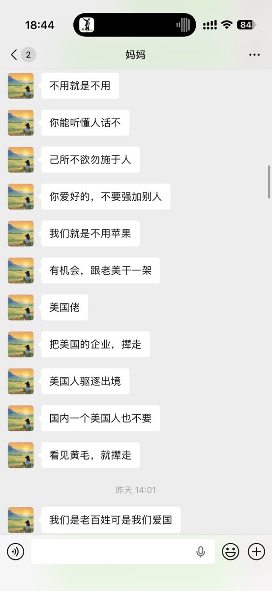

跟你讲个故事，上个月我爸想换手机，我妈手机也在高考那一周末出现绿线，正好也用了三年多也是时候该换了。我一开始想给他俩安排iPhone，我爸一直在用华为mate系列爱不释手，我妈用小米13感觉也不错，就拒绝了我的请求
后面我发工资就给他们安排了华为mate80和红米k90promax，我觉得他们也用得很好。就像我想去马来西亚玩喊上我爸妈，我爸大热天不爱出去就拒绝了，我妈因为之前有带她去香港就顺便办了护照，在我生日前就把票定好了也没啥问题。昨天晚上到家后，一家人也是很开心，分享这趟旅途玩了啥吃了啥无事发生，毕竟第二天还要上班
有的时候，作为子女已经很独立了，也要考虑爸妈也是过来人，也是独立性很高的一对老夫老妻。我给我父母换手机也是给他们自己用过的牌子，适合自己才是最好的，真的他们还没老年痴呆前都会为自己考虑好。你问我用鸿蒙系统会不会PTSD答案是会的，但老人家用习惯了一个小老百姓还怕中国监听？
你能独立还那么孝顺，这一点也没错。但你要知道，有的时候要遵从对方的意见，可能小时候是大人和小孩的关系，成年后大家其实是一个家里的朋友，不要总觉得他们想干涉你什么，他们也只想跟看朋友圈一样知道你在干嘛，让父母放心就够了。如果你要说有啥遗憾的，我是个不着家的人，对家里本身就有亏欠在心底
对他们来说，在这世上的时间已经不多了，20年从小到大40年也是转瞬即逝，一辈子说长长说短短，他们要的从来都不是什么iPhone、金钱和名利，他们就只想你在身边多陪陪他们。每个能养得起孩子的父母都是伟大的，至少这是他们人生中一个收不回本的投资，更大的要求就凭自己本事实现，不要想太多
后面我发工资就给他们安排了华为mate80和红米k90promax，我觉得他们也用得很好。就像我想去马来西亚玩喊上我爸妈，我爸大热天不爱出去就拒绝了，我妈因为之前有带她去香港就顺便办了护照，在我生日前就把票定好了也没啥问题。昨天晚上到家后，一家人也是很开心，分享这趟旅途玩了啥吃了啥无事发生，毕竟第二天还要上班
有的时候，作为子女已经很独立了，也要考虑爸妈也是过来人，也是独立性很高的一对老夫老妻。我给我父母换手机也是给他们自己用过的牌子，适合自己才是最好的，真的他们还没老年痴呆前都会为自己考虑好。你问我用鸿蒙系统会不会PTSD答案是会的，但老人家用习惯了一个小老百姓还怕中国监听？
你能独立还那么孝顺，这一点也没错。但你要知道，有的时候要遵从对方的意见，可能小时候是大人和小孩的关系，成年后大家其实是一个家里的朋友，不要总觉得他们想干涉你什么，他们也只想跟看朋友圈一样知道你在干嘛，让父母放心就够了。如果你要说有啥遗憾的，我是个不着家的人，对家里本身就有亏欠在心底
对他们来说，在这世上的时间已经不多了，20年从小到大40年也是转瞬即逝，一辈子说长长说短短，他们要的从来都不是什么iPhone、金钱和名利，他们就只想你在身边多陪陪他们。每个能养得起孩子的父母都是伟大的，至少这是他们人生中一个收不回本的投资，更大的要求就凭自己本事实现，不要想太多
